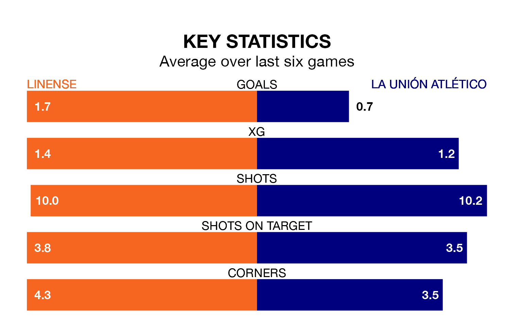

La Unión Atlético make the journey to Estadio Municipal de La Línea de la Concepción to play Linense on Sunday looking to pick up points to end their three-game losing streak.
La Unión Atlético's struggles have left them with six points from their last six Segunda División RFEF Group 4 matches, while their opponents have earned nine from a possible 18.
With 19 goals in 17 games so far this season, Linense are scoring at the league's average rate with 1.1 goals per game. And they are conceding fewer than average, letting in 15 goals at a rate of 0.9 per game.
La Unión Atlético are also average scorers, with 1.1 goals per game. They have conceded 1.4 goals per game.
La Unión Atlético are 14th in the table after 17 games, of which they have won six and lost 11, earning 18 points.
The home team are eight places ahead of the visitors in sixth, with seven wins and five draws putting them on 26 points.
Linense's last match was on January 7, a 4-2 win against Antoniano.
La Unión Atlético lost 3-1 against Cádiz B last time out, also on January 7.
Updated: 11:31, 09/01/24